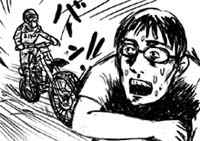
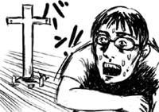
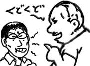
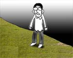
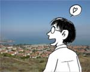
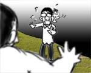

ESL(英会話)クラス春の部の一区切り、ということでティーチャーが生徒をセカンドハウスでのパーティに招待してくれました。休日出勤の後、他にすることもないので軽い気持ちで出発してみました。
ところが、行けども行けども目的の出口は見えて来ず、そのうちL.A.エリアを脱出。何もない山間を延々走ることになりました。出口を見落としたんじゃ…と不安が最高潮に達した時、ようやく地図に書かれた地名が案内板に登場。まさか、ホームパーティに誘われて100マイル以上走ることになるとは思いもよりませんでした。アメリカ人の距離感覚はやっぱりどこかおかしいです。
パーティでは(案の定)手持ち無沙汰になったので、庭で子供達とバレーボールをやってました。会話のキャッチボールよりは断然楽なので(最悪)。
その後、ティーチャーが家の裏の山へ5km程度のハイキングに出かけるというので同行。この辺の山は、半分砂漠、半分森という感じでそれなりに興味深いです。ティーチャーが「この道は舗装されてないけど、山火事なんかの時に消防車が通るために作ってあるんだよ」と説明していると、道の向こうから絶妙のタイミングでモトクロスバイクが登場。えー！

その後、山の中にぽつねんと十字架が登場。なんだろうと思っていると、ティーチャーが「何年か前に高校生がこの山の中で殺し合いをしてね。その時死んだ子のメモリアルで立ててあるんだよ」と説明を始めました。のどかなハイキングに突如忍び寄ってくるバトルロワイヤルな展開。どうなってますか！

衝撃を受けているうちにハイキングは終了し、また100マイルの道のりを家まで引き返したのでした。考えさせられすぎです。
ここ２ヶ月ばかり、日本から出張者が来ていて、たまに昼ご飯を一緒に食べているのです。
この週末はドジャーズスタジアムでドジャーズVSヤンキースの試合があるらしくて、興味があるなら一緒に行かない？と誘われました。
興味がないので行きません！(即答)。しかし、元来小心者な僕は、いかに野球のことを知らないかについて、ついつい言い訳がましく話してしまうのです。そして新庄？という選手？がとっくに日本に帰っていることを今日初めて知りました。
それを聞いた出張者の人は「それは本当にオンチだねぇ」と言いました。
オンチじゃねぇ！ウンチだ！(理解してもらえてなによりです)
米国で生活するようになって、ペンが必須になりました。DILBERT風に胸ポケットにメインと予備の2本を差しておくことが重要です。言葉で不十分な場合は、その辺の紙に書いて説明する必要がありますし、何より英語で聞き取ったことはちゃんと書き留めておかないと簡単に忘れてしまうので(ヘボ)。
しかし今日は、たまたま居室にペンを置きっぱなしにしたまま実験室に来てしまったので、人に説明する時に大変不便な思いをする事に。困って部屋内を探しまわると、実験装置の上にペンを発見したのでありがたく使わせてもらうことにしました。
しばらくすると、デブでビッグな白人のおっちゃんが「俺のペンどこいった」と騒ぎ出しました。これ、共用じゃなかったんだ！すぐにペンを返しながら「すいません、共用だと思ったので」と謝ったのですが、デブでビッグな白人のおっちゃんは「人の物勝手に持っていくなってパパに言われなかったのか？」と完全に人を子供扱い。その後５分くらい延々と説教される羽目に。

くそう！白人のおっちゃん(デブでビッグ)め！
近場に「シャブ２」なるしゃぶしゃぶ専門店があることを最近知りました。
前を通りかかった時にToddに「シャブ２には行った事ある？」と聞かれて初めて知るところとなりました。お礼に「日本語で『シャブ』とは麻薬の隠語」ということを教えてあげました。大変興味深そうにしていました。
僕は余計なことばかりしているな！
早いもので、今日で渡米してちょうど１年が経ったことになります。そこで僕のこの１年のアメリカ生活ぶりを４コマで楽しく表現してみたいと思います。
- 崖の向こうは奈落の底だ。
- そこに背を向けて立ってる。

- でも、背を向けて立ってるので普段は気にならない。目に映る風景は結構いい。

- でも、ときどき朝青龍みたいなのが来る。

得た物も失った物もあるし、盛りだくさんだったような、あっという間ような、そんな感じです。ええ。